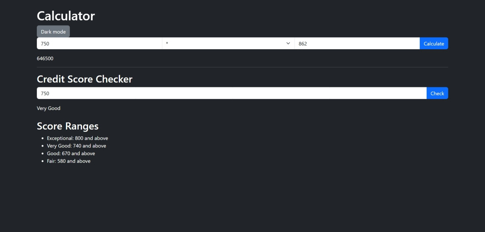
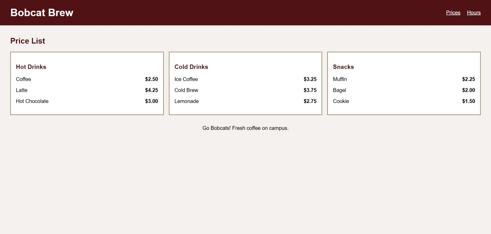
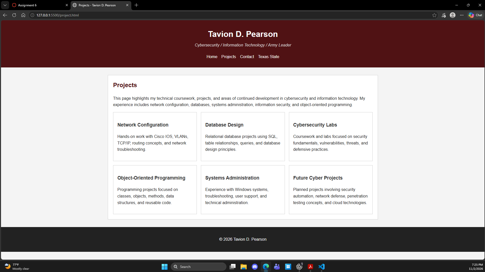

Calculator & Credit Score Checker

This page combines a basic calculator with a tool that classifies an entered credit score. I built the calculation logic, score categories, and dark-mode control.
Open the calculator and checkerCybersecurity / Information Technology / Army Leader

This page combines a basic calculator with a tool that classifies an entered credit score. I built the calculation logic, score categories, and dark-mode control.
Open the calculator and checker
Bobcat Brew is a café menu that displays drinks, snacks, and prices. I built the three-category layout and aligned the prices so customers can scan the menu quickly.
Open the Bobcat Brew menu
This site introduces my background in cybersecurity, IT, and Army leadership and showcases my coursework. I built the responsive layout, JavaScript-generated hobby list, and interactive project preview.
View portfolio source